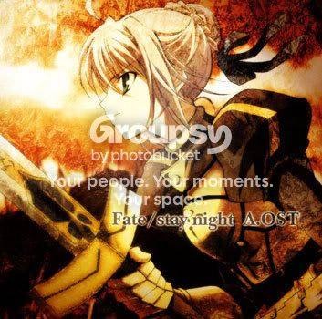
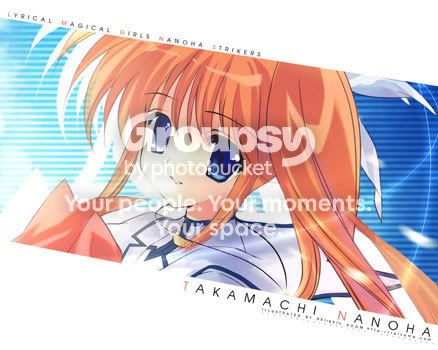
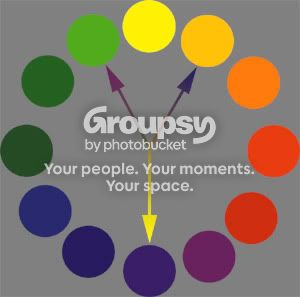
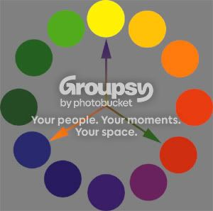
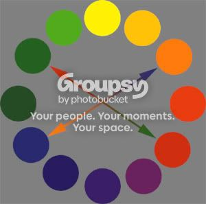
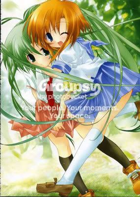

เปนไรมั้ยด้อม ไม่เข้าใจถามได้นะ -*-
Tips: Color Schemes ชุดสีที่เข้ากัน
ถ้าให้อธิบายง่ายๆ คงจะเป็นวิธีการเืลือกสีเพื่อนำมาใช้ประกอบกันในงานต่างๆค่ะ
เพื่อให้โทนสีไปในทิศทางเดียวกัน หรือขับจุดเด่นของกันและกันออกมาอย่างลงตัว
ขอยกคำศัพท์ที่เกี่ยวข้องกับ color schemes มาให้ดูกันคร่าวๆนะคะ
Hue: ชื่อของสีแต่ละสี
Shade: ค่าความเข้มของสี มีค่าต่ำ
Tint: ค่าความสว่างของสี มีค่าสูง
Saturation: ค่าความบริสุทธิ์และความสดของสี
ประเภทของ color schemes หลักๆก็มี 6 ประเภท ค่ะ
1. Monochromatic colors: เป็นชุดของสีที่มี Shade และ Tint ต่างกันในสีๆเดียว ใช่ง่ายที่สุดในบรรดาชุดสี

ภาพตัวอย่างงับ

2. Analogouse colors: เป็นชุดสีข้างเคียงของสีที่เราใช้เป็นหลัก

ภาพตัวอย่างงับ
 3. Complemetary colors:
3. Complemetary colors: เป็นชุดสีคู่ตรงกันข้ามกัน มักใช้เมื่อต้องการให้วัตถุข้างหน้าเด่นขึ้นมา

ภาพตัวอย่างงับ

4. Splite complementary colors: ชุดสีคู่ตรงกันข้ามแต่จะมีสีหนึ่งที่มีค่าสีใกล้เคียงกันอยู่ เพื่อเป็นการฆ่าความสดหรือลดการตัดกันของสีที่มากจนเกินไป

ภาพตัวอย่างงับ
 5. Triadic colors:
5. Triadic colors: ชุดสีที่อยู่ห่างกันในลักษณะสามเหลี่ยมด้านเท่า

ภาพตัวอย่างงับ
 6. Double complementary colors:
6. Double complementary colors: ชุดสีคู่ตรงข้ามแบบ 2 คู่ ใช้ยากมากที่สุดในบรรดาชุดสี

ภาพตัวอย่างงับ

ใครไม่เข้าใจก็ถามได้นะงับ ถึง จขกท. จะรู้แบบงูๆปลาๆแต่ก็จะพยายามหาคำตอบมาให้งิ =w="